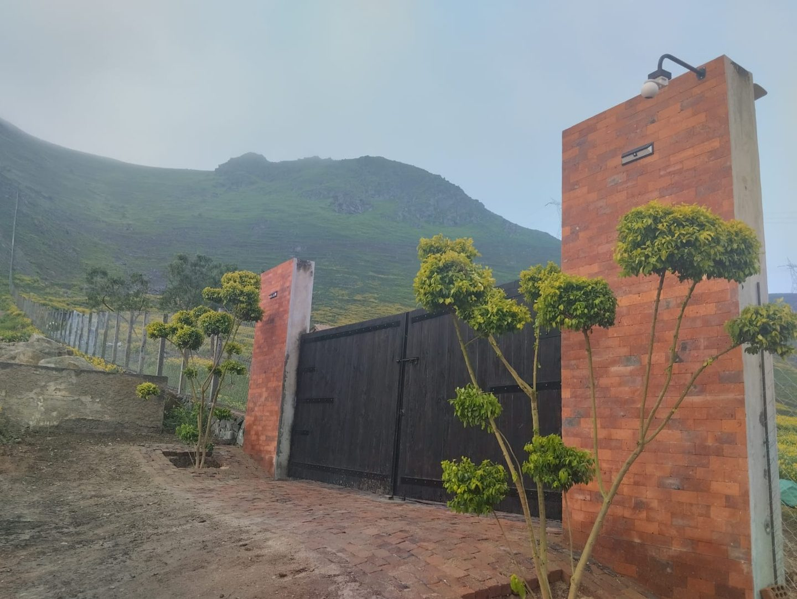
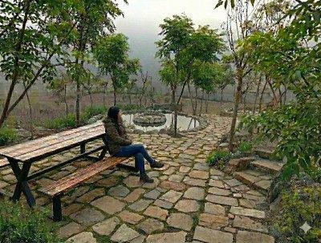
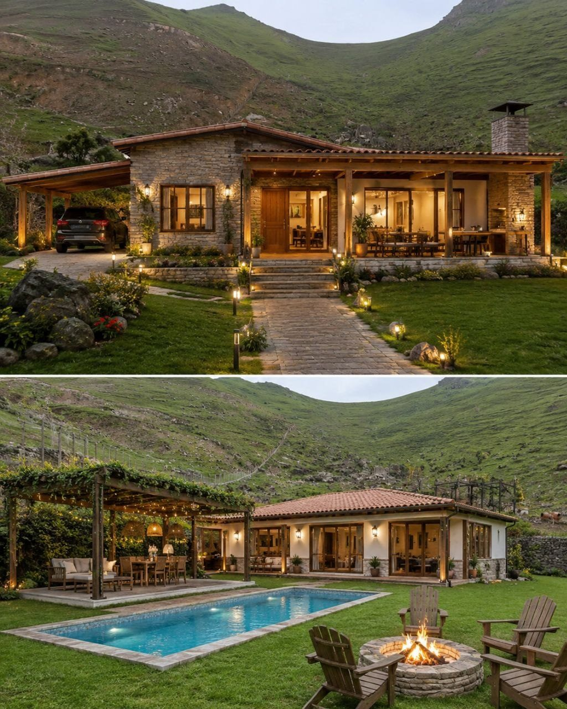
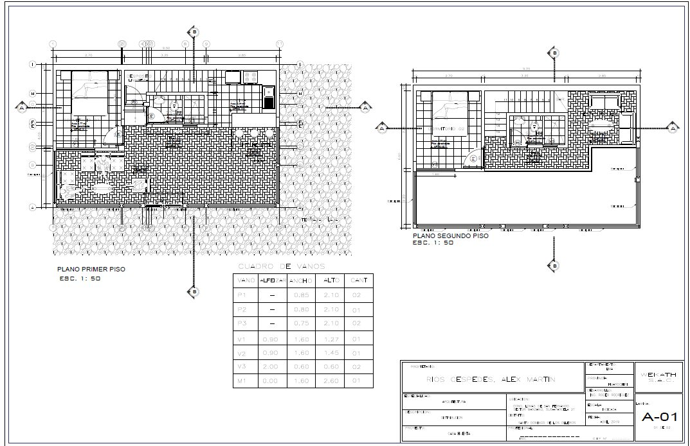
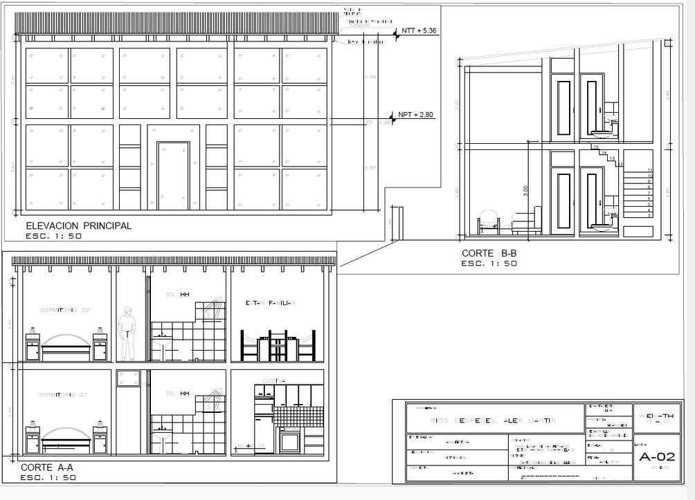
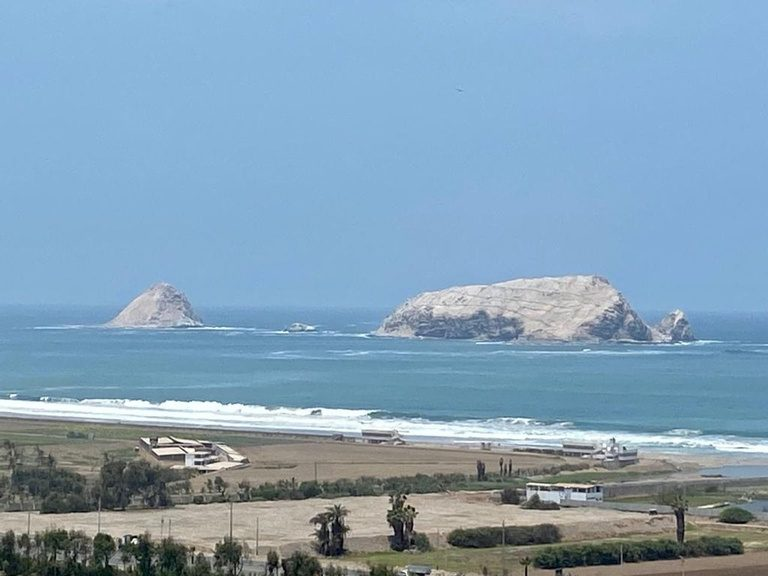
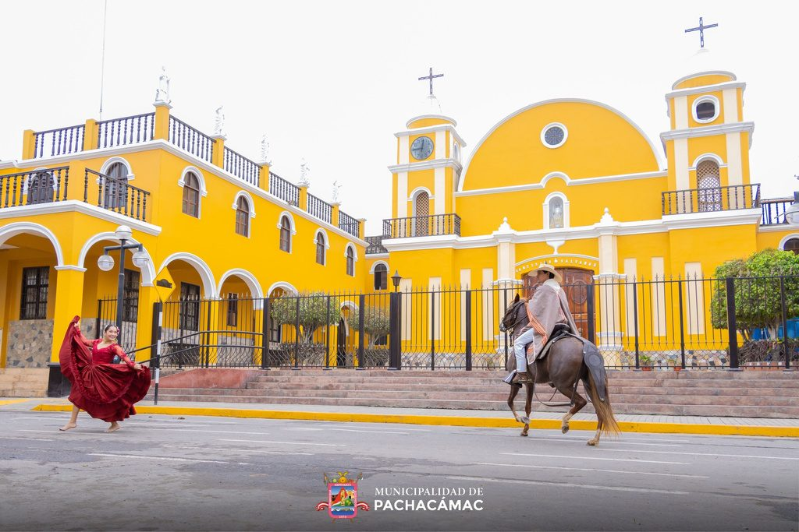

Santo Domingo de los Olleros · Huarochirí · Lima
Muy cerca a Lima, tu tranquilidad
Su parcela, con partida registral propia.
106 sub-parcelas independizadas en SUNARP, a 15 minutos de la Plaza de Pachacámac, en un cerro que verdea con la neblina la mayor parte del año.
El lugar
Espacios saludables para vivir
A solo 30 km al sur de Lima, Alta Colina nace en un entorno que equilibra la proyección residencial de la capital con la esencia natural de la costa peruana.
La ubicación del condominio le permite mantener una apariencia tipo pradera a lo largo de la mayor parte del año.

El plano
106 sub-parcelas y un camino que las une
La sub-parcela 106 es el camino de servidumbre: la vía que recorre el condominio de punta a punta. Toque cualquier parcela para ver su ficha.
La obra
Lo que ya está construido
- 01 Parcelas independizadas Cada parcela con su propia inscripción en SUNARP. No se compra un porcentaje de un terreno grande: se compra una parcela con partida.
- 02 Cerco perimetral y pórtico El condominio está cerrado y tiene su ingreso construido en ladrillo cara vista.
- 03 Amplias vías El camino de servidumbre recorre el condominio completo y llega a cada parcela.
- 04 Áreas verdes interconectadas Numerosas áreas verdes repartidas por el terreno, unidas entre sí y no arrinconadas.
- 05 Cerco vivo y sistema de goteo Vegetación plantada con riego por goteo instalado, para que crezca sin desperdiciar agua.
- 06 Biodigestores instalados Tratamiento de aguas residuales ya puesto, listo para usar. Amigable con el ambiente.
La partida
Comprar tranquilo se puede comprobar
En esta zona la primera pregunta siempre es la misma: ¿el terreno es formal? Alta Colina responde con el documento, no con la palabra.
El predio está inscrito en el Registro de Predios de la Zona Registral N.º IX, Sede Lima, y las parcelas están independizadas. Puede pedir la copia literal y verificarla usted mismo en SUNARP antes de decidir nada.
Zona Registral N.º IX · Sede Lima · Oficina Registral Lima
15355546
Partida del predio matriz, Registro de Predios
- Predio
- El Manzano, Pampa El Taro
- Distrito
- Sto. Domingo de los Olleros
- Sub-parcelas
- 106
- Camino de servidumbre
- Sub-parcela 106
Su casa
Le entregamos los planos para construir
No tiene que empezar de cero. Con su parcela recibe modelos de planos de arquitectura, listos para llevar a su maestro o a su arquitecto.



El recorrido
Así está hoy el condominio
Fotos y videos tomados en el terreno.
Los alrededores
Lo que tiene a la mano


Cómo llegar
A 15 minutos de Pachacámac
El condominio está en El Manzano, Pampa El Taro, distrito de Santo Domingo de los Olleros, provincia de Huarochirí.
- SALIDADesde Lima por la Panamericana Sur
- 30 KMPlaza de Armas de Pachacámac
- 15 MINEl Manzano, Pampa El Taro · Sto. Domingo de los Olleros
Visitar
Venga a caminar el terreno.
Coordinamos el día y lo acompañamos. Le mostramos las parcelas disponibles, el plano y la partida registral.
- WhatsApp del asesor
- 907 155 138
- Teléfono del proyecto
- 970 166 956
- Correo
- panorama-pachacamac@live.com
- Ubicación
- El Manzano, Pampa El Taro
Sto. Domingo de los Olleros